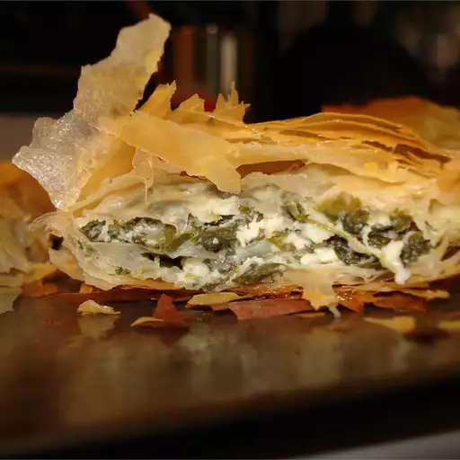

Spanakopita

A Classic Greek Dish
The recipe for these spinach and feta appetizer triangles came from a Greek family friend. They may be frozen prior to baking.
Ingredients
- ½ cup vegetable oil
- 2 large onions, chopped
- 2 (10 ounce) packages frozen chopped spinach - thawed, drained and squeezed dry
- 2 tablespoons chopped fresh dill
- 2 tablespoons all-purpose flour
- 2 (4 ounce) packages feta cheese, crumbled
- 4 eggs, lightly beaten
- salt and pepper to taste
- 1 ½ (16 ounce) packages phyllo dough
- ¾ pound butter, melted
Steps
- Preheat oven to 350 degrees F (175 degrees C).
- Heat vegetable oil in a large saucepan over medium heat. Slowly cook and stir onions until softened. Mix in spinach, dill and flour. Cook approximately 10 minutes, or until most of the moisture has been absorbed. Remove from heat. Mix in feta cheese, eggs, salt and pepper.
- Separate one sheet of phyllo from the stack and evenly brush with a light coating of butter. Place another sheet of phyllo over the butter and press the two sheets together. Cut the layered phyllo dough into long strips about 3 inches wide. Keep the remaining phyllo covered with plastic wrap to keep it from drying out.
- Lay out one strip of phyllo at a time on your work surface with one of the narrow ends close to you. Place a heaping tablespoon of filling 1 inch from the end closest to you. Fold the bottom right corner over the filling to the left edge to form a triangle. Fold the triangle up, bringing the point at the bottom left up to rest along the left edge. Turn the lower left corner over to touch the right edge. Continue turning the triangle over in this manner until you reach the end of the phyllo.
- Repeat with the remaining filling and phyllo dough. Place filled phyllo dough triangles on a large baking sheet and brush with the remaining butter. (At this point, the pastries may be frozen. See Cook's Note.)
- Bake in the preheated oven until the phyllo is golden brown, 45 minutes to 1 hour.